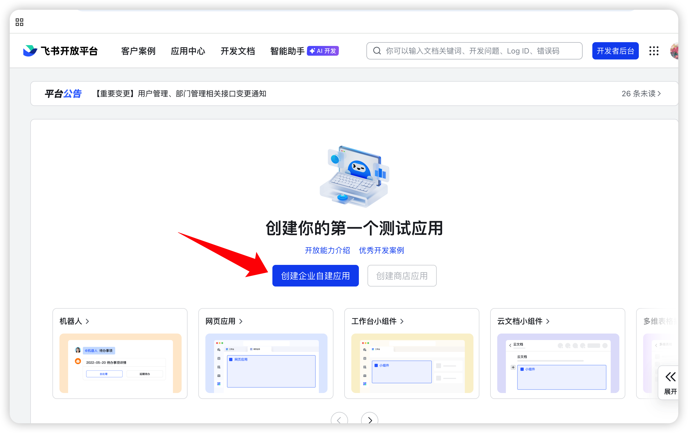
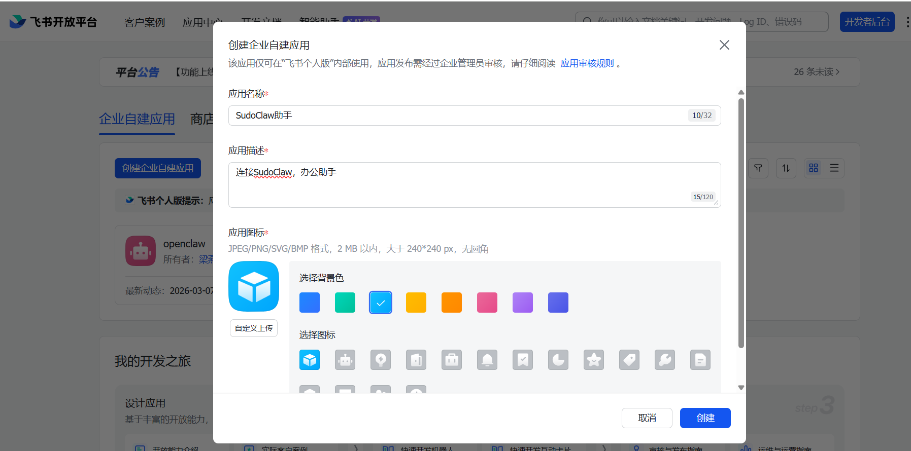
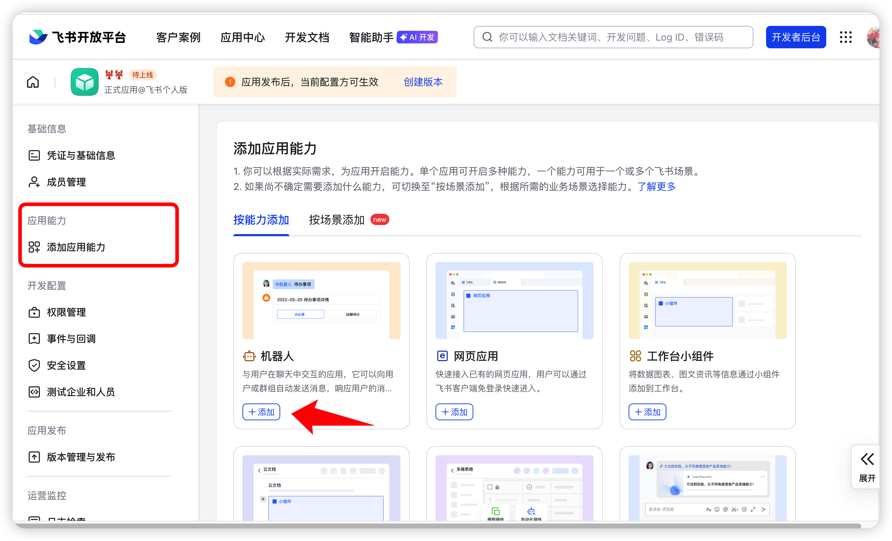
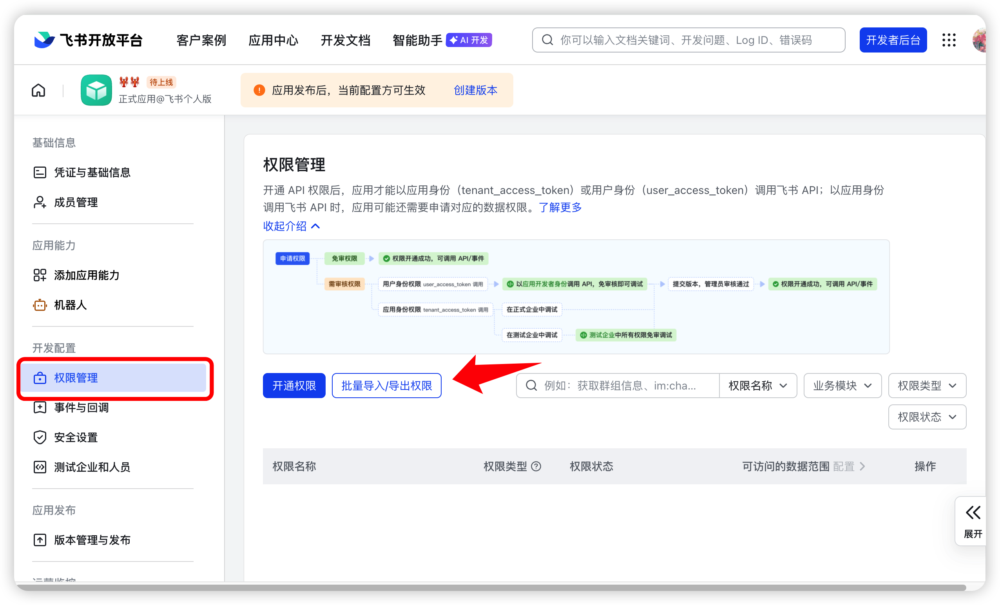
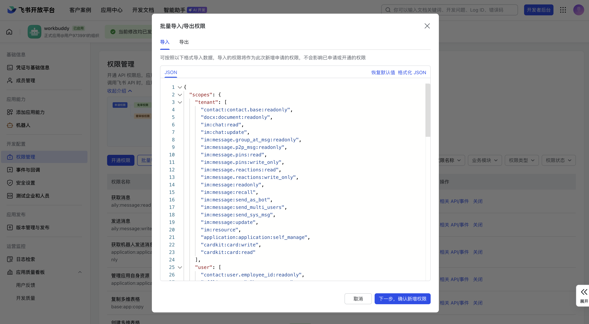
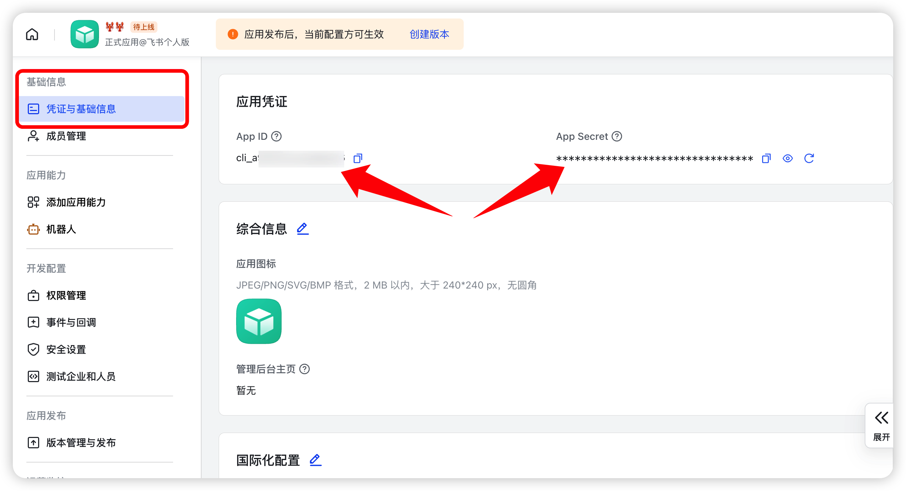
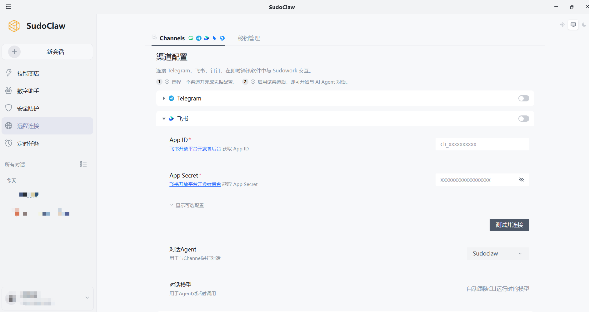
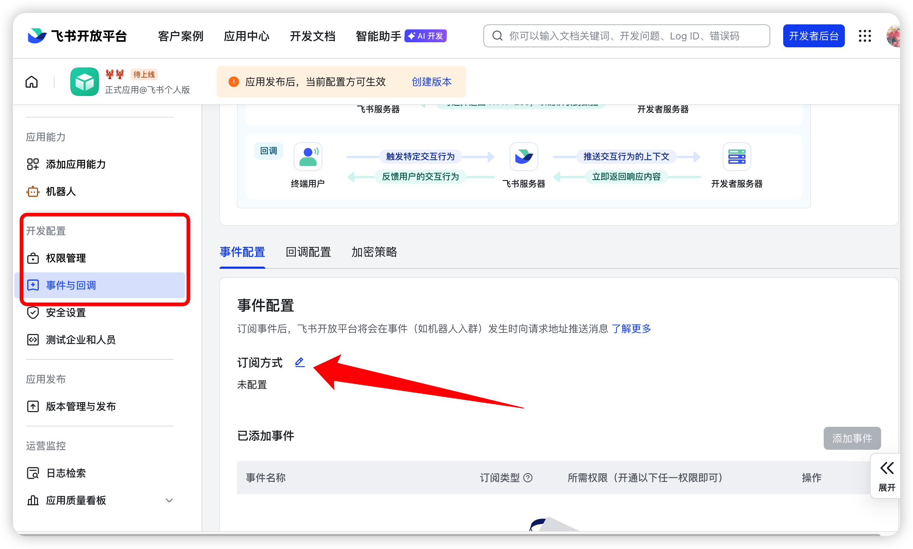
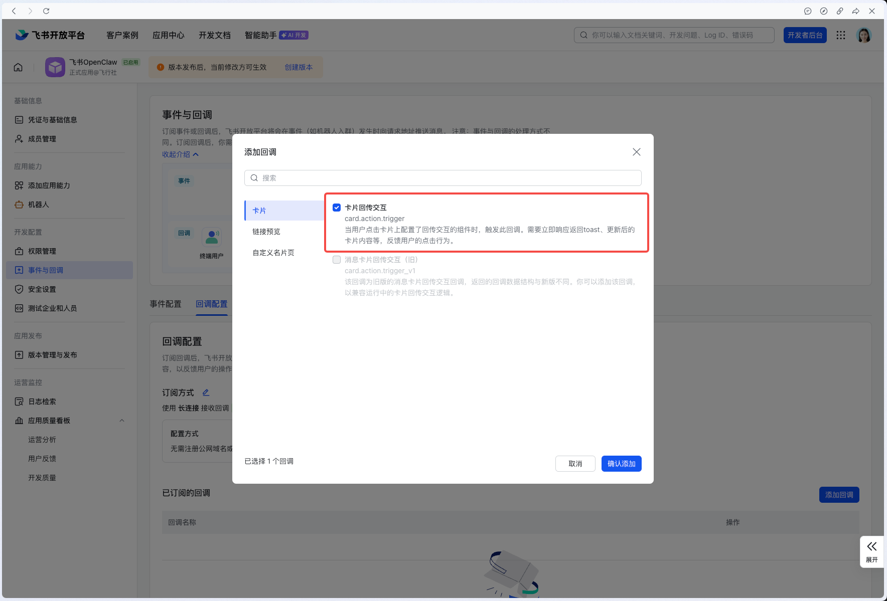
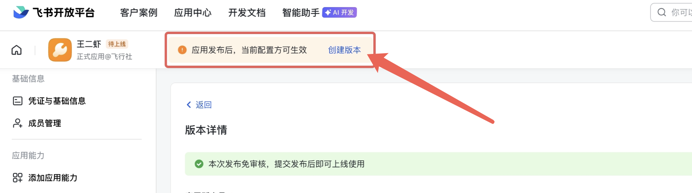

飞书接入指南
通过 SudoClaw 的飞书渠道配置，将 SudoClaw 接入飞书，随时随地远程操控完成任务
前提条件
- 已在电脑上安装并登录 SudoClaw
- 拥有一个飞书企业账号（需要有创建应用的权限）
SudoClaw 通过 WebSocket 长连接方式接入飞书，无需配置事件回调地址或 Webhook URL，只需填写 App ID 和 App Secret 即可完成连接。
步骤一：创建飞书应用
- 1
打开浏览器，访问飞书开放平台，使用企业账号登录
- 2
点击「创建企业自建应用」

- 3
填写应用信息
| 配置项 | 说明 |
|---|---|
| 应用名称 | 给应用起一个名字，如「SudoClaw 助手」 |
| 应用描述 | 简单描述应用的功能 |
| 应用图标 | 上传一个应用图标 |
填写完成后，点击「创建」按钮。应用创建成功后会自动跳转到应用详情页面。

步骤二：添加机器人能力
在应用详情页的「添加应用能力」区域，找到「机器人」卡片，点击「添加」按钮。


添加机器人能力后，请填写机器人的基本信息（名称、描述、预览图），然后点击「确认发布」。
步骤三：配置应用权限
为了让机器人能够正常收发消息，需要为应用添加必要的权限。
1）进入权限管理
在应用详情页左侧菜单中，点击「权限管理」，然后选择「批量导入 / 导出权限」。

2）批量导入权限
在弹出的窗口中：
- 1
清空输入框中的所有内容
- 2
将下方的权限列表完整复制并粘贴进去
- 3
点击「确定新增权限」
需要导入的权限列表：
{
"scopes": {
"tenant": [
"contact:contact.base:readonly",
"docx:document:readonly",
"im:chat:read",
"im:chat:update",
"im:message.group_at_msg:readonly",
"im:message.p2p_msg:readonly",
"im:message.pins:read",
"im:message.pins:write_only",
"im:message.reactions:read",
"im:message.reactions:write_only",
"im:message:readonly",
"im:message:recall",
"im:message:send_as_bot",
"im:message:send_multi_users",
"im:message:send_sys_msg",
"im:message:update",
"im:resource",
"application:application:self_manage",
"cardkit:card:write",
"cardkit:card:read"
],
"user": [
"contact:user.employee_id:readonly",
"offline_access",
"base:app:copy",
"base:field:create",
"base:field:delete",
"base:field:read",
"base:field:update",
"base:record:create",
"base:record:delete",
"base:record:retrieve",
"base:record:update",
"base:table:create",
"base:table:delete",
"base:table:read",
"base:table:update",
"base:view:read",
"base:view:write_only",
"base:app:create",
"base:app:update",
"base:app:read",
"board:whiteboard:node:create",
"board:whiteboard:node:read",
"calendar:calendar:read",
"calendar:calendar.event:create",
"calendar:calendar.event:delete",
"calendar:calendar.event:read",
"calendar:calendar.event:reply",
"calendar:calendar.event:update",
"calendar:calendar.free_busy:read",
"contact:contact.base:readonly",
"contact:user.base:readonly",
"contact:user:search",
"docs:document.comment:create",
"docs:document.comment:read",
"docs:document.comment:update",
"docs:document.media:download",
"docs:document:copy",
"docx:document:create",
"docx:document:readonly",
"docx:document:write_only",
"drive:drive.metadata:readonly",
"drive:file:download",
"drive:file:upload",
"im:chat.members:read",
"im:chat:read",
"im:message",
"im:message.group_msg:get_as_user",
"im:message.p2p_msg:get_as_user",
"im:message:readonly",
"search:docs:read",
"search:message",
"space:document:delete",
"space:document:move",
"space:document:retrieve",
"task:comment:read",
"task:comment:write",
"task:task:read",
"task:task:write",
"task:task:writeonly",
"task:tasklist:read",
"task:tasklist:write",
"wiki:node:copy",
"wiki:node:create",
"wiki:node:move",
"wiki:node:read",
"wiki:node:retrieve",
"wiki:space:read",
"wiki:space:retrieve",
"wiki:space:write_only"
]
}
}

等待几秒钟，页面会显示权限已成功添加。以上权限涵盖消息收发、文档、日历、通讯录等常用能力。

步骤四：获取应用凭证
在应用详情页左侧菜单中，点击「凭证与基础信息」，获取以下凭证：

| 凭证 | 说明 |
|---|---|
App ID | 应用的唯一标识 |
App Secret | 应用的密钥（点击「查看」获取） |
Encrypt Key（可选） | 事件加密密钥，如需启用可自行配置 |
Verification Token（可选） | 事件验证令牌，如需启用可自行配置 |
请务必妥善保管 App Secret，不要泄露给他人。Encrypt Key 和 Verification Token 为可选项，SudoClaw 不强制要求填写。
步骤五：在 SudoClaw 中完成连接
- 1
打开 SudoClaw
- 2
进入 远程连接 → 渠道配置
- 3
在集成列表中找到 飞书，并点击
- 4
填入
App ID和App Secret - 5
点击 「测试并连接」 完成连接
SudoClaw 使用 WebSocket 长连接与飞书通信，无需在飞书开放平台配置事件回调地址。连接成功后，可在 飞书渠道配置中选择使用的 Agent（默认为 SudoClaw）。

步骤六：配置飞书事件回调
接下来，我们需要告诉飞书将消息发送到哪里。
1）配置事件订阅
- 1
返回飞书开放平台，进入应用详情页
- 2
在左侧菜单中，点击「事件与回调」
- 3
在「订阅方式」中选择「将事件发送至开发者服务器」
- 4
将 SudoClaw 中获取的 Webhook 地址粘贴到输入框中
- 5
点击「保存」

2）添加消息接收事件
在「事件配置」区域，点击「添加事件」，搜索并添加「接收消息」事件。

3）配置卡片回调
- 1
切换到「回调配置」页签
- 2
搜索「卡片回传交互」
- 3
点击「确认添加」


步骤七：发布应用
应用必须发布后才能在飞书中使用。
- 1
点击页面上方的「创建版本」按钮，填写版本号和版本描述（如「集成 SudoClaw」）

- 2
创建成功后，点击版本右侧的「发布」按钮
- 3
等待审核通过（企业管理员通常会自动审批通过）

步骤八：开始使用
- 1
在飞书的搜索框中，输入刚才创建的机器人名称进行搜索
- 2
点击机器人进入对话窗口，或点击「打开应用」开始使用
- 3
直接发送您的需求，SudoClaw 会在电脑上自动执行任务，并将结果返回给您
如果机器人能够正常回复，说明您已成功完成 SudoClaw 与飞书的对接！
常见问题
机器人没有响应怎么办？
- 检查应用状态：确认应用已成功发布
- 检查 SudoClaw：确保电脑上的 SudoClaw 正在运行，且渠道配置服务已开启
- 核对凭据：确认 App ID 和 App Secret 是否正确
- 检查权限：确保消息相关权限已正确开通
测试并连接 失败怎么办？
- 确认 App ID 和 App Secret 填写正确，没有多余空格
- 确认飞书应用已发布
- 如 App Secret 已泄露或失效，在飞书开放平台重新生成后再次尝试
收不到消息怎么办？
- 确认消息相关权限（如 im:message）已正确开通
- 确认 SudoClaw 与飞书的连接状态为已连接
- 尝试重新启动 SudoClaw 后再次测试